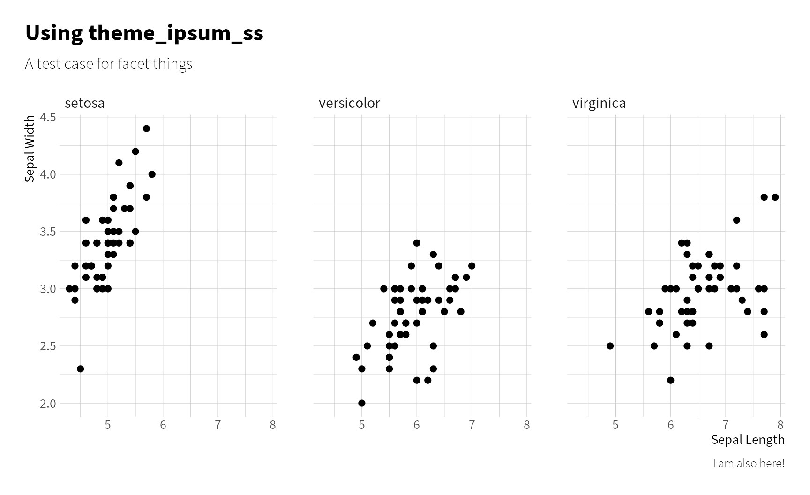
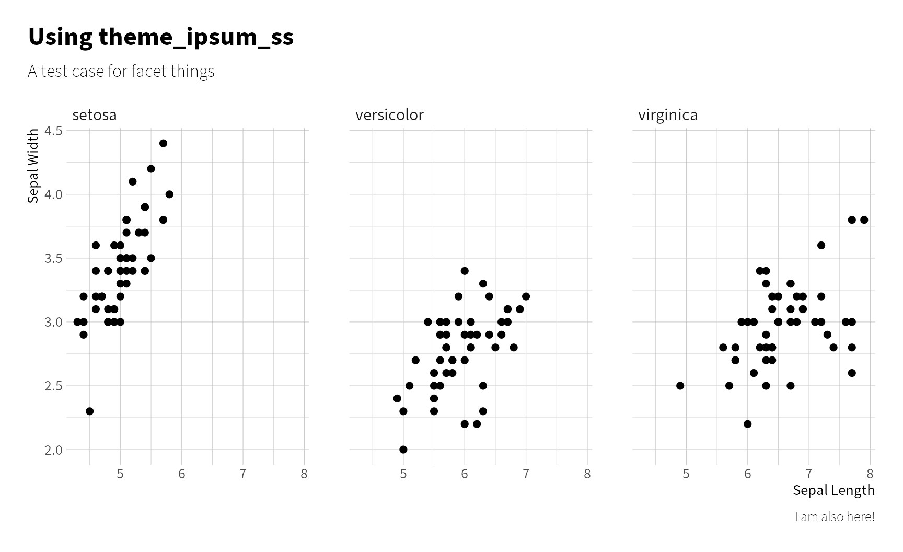
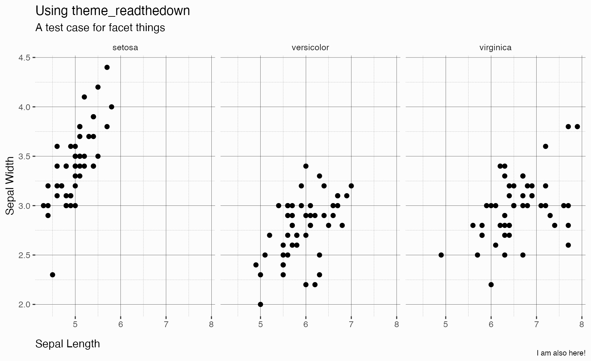
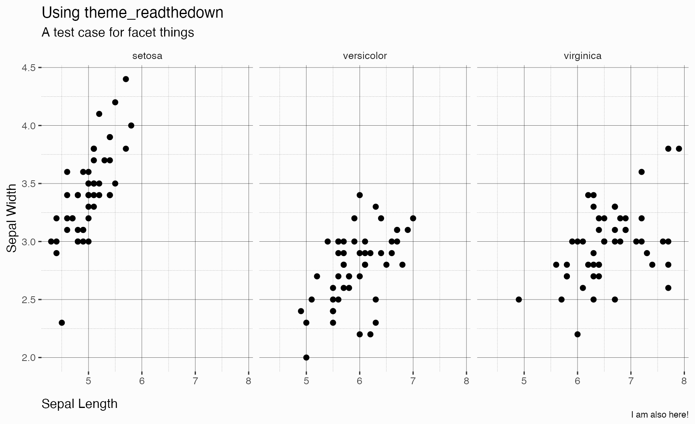
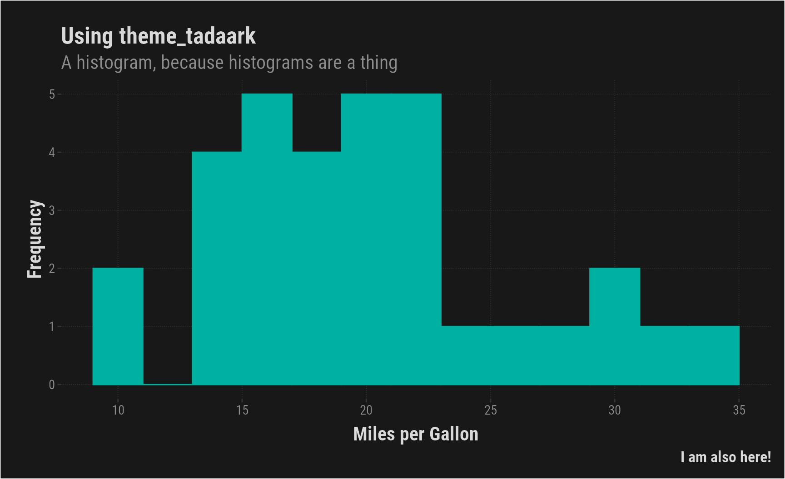
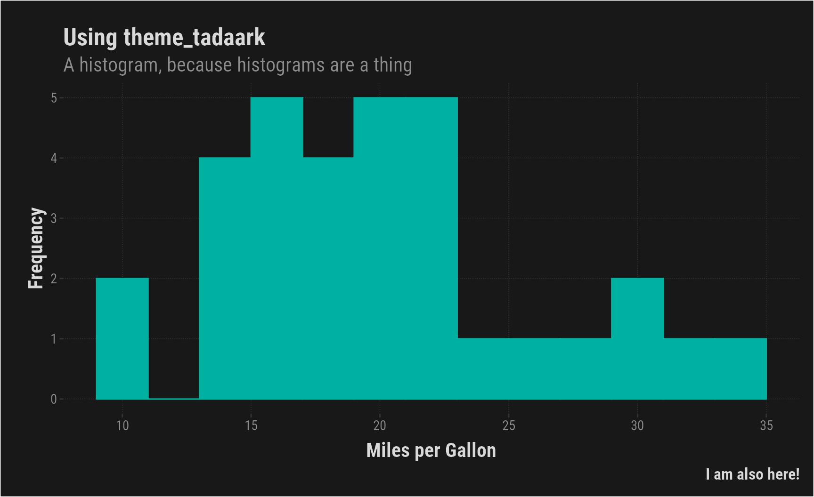

library(ggplot2) library(tadaathemes) # List all themes in package pkg_themes <- getNamespaceExports("tadaathemes") pkg_themes <- sort(pkg_themes[grepl("^theme\\_", pkg_themes)]) # Test plots p_scatter <- ggplot(mtcars, aes(x = wt, y = mpg)) + geom_line(stat = "smooth", method = lm, formula = y ~ x) + geom_point(size = 2, alpha = .5) + labs( subtitle = "The ggplot we've all seen", x = "Weight", y = "Miles per Gallon", color = "Gears", caption = "I am also here!" ) p_facets <- ggplot(iris, aes(x = Sepal.Length, y = Sepal.Width)) + facet_wrap(~Species) + geom_point(size = 2) + labs( subtitle = "A test case for facet things", x = "Sepal Length", y = "Sepal Width", caption = "I am also here!" ) p_histo <- ggplot(mtcars, aes(x = mpg)) + geom_histogram(binwidth = 2) + labs( subtitle = "A histogram, because histograms are a thing", x = "Miles per Gallon", y = "Frequency", caption = "I am also here!" ) # Make a plot with a theme provided as character argument plot_with_theme <- function(p, theme = "theme_minimal") { this_theme <- eval(parse(text = theme)) p + labs(title = paste("Using", theme)) + this_theme() }
 

 



 
